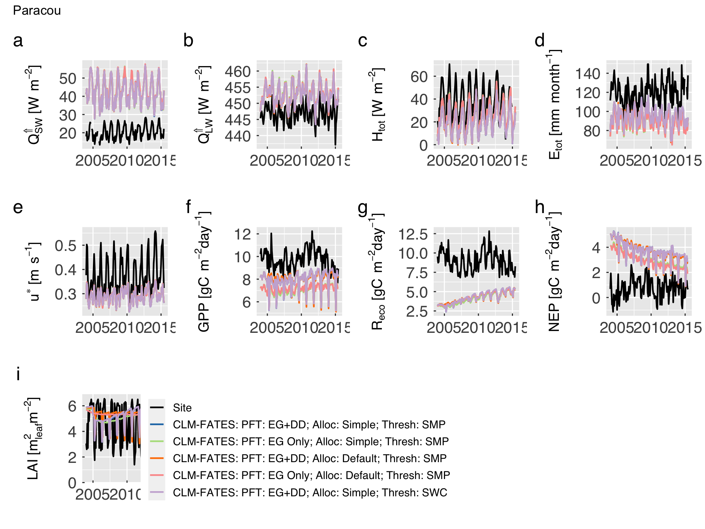
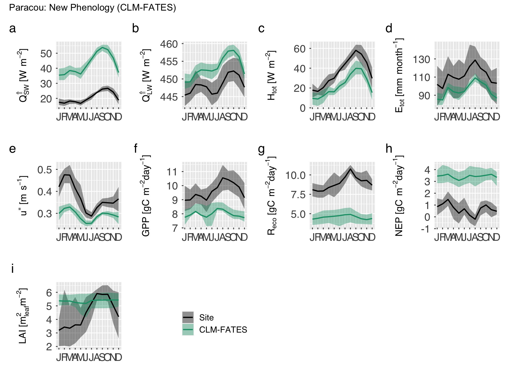
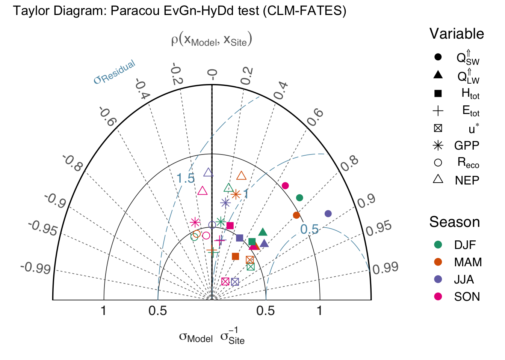
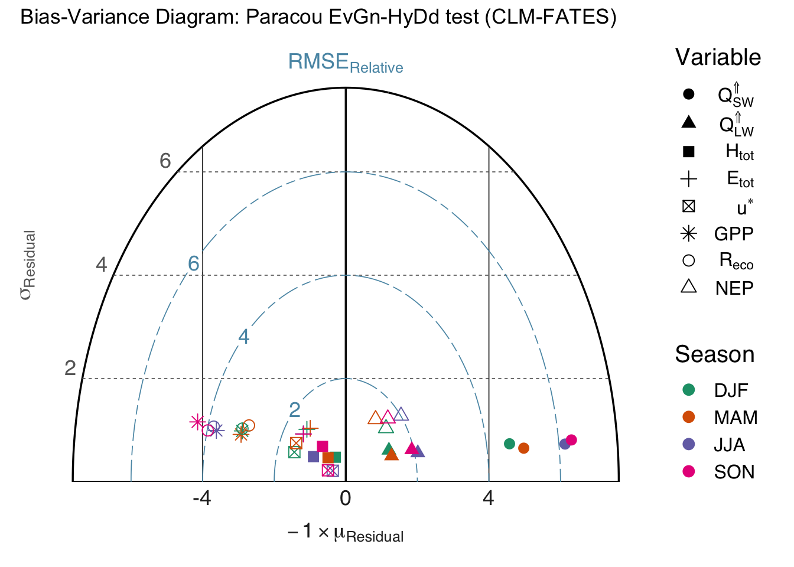

Main script
Note: Changes beyond this point are only needed if you are developing the notebook.
Initial settings.
First, we load the list of host land model variables that we may consider for the comparison. We also load list.2.data.table.r to
source(file.path(util_path,"load.everything.r"),chdir=TRUE)## + Load scripts from /Users/marcoslongo/Dropbox/Home/Util/RUtils.We then make sure to set up the derived paths and files.
# Case path. Do not change this unless you used non-standard case output for ELM/CLM.
case_path = file.path(hesm_main,case_name)
#---~---
# Vector with all possible ELM/CLM paths containing NetCDF history files. Do not change
# this unless you know what you are doing.
#---~---
simul_path = c( file.path(case_path,"run"), file.path(case_path,"lnd","hist"))
# Output path for time series.
comparison_path = file.path(plot_main,"comparison" )
taylor_biasvar_path = file.path(plot_main,"taylor_biasvar")
# Create output paths.
dummy = dir.create(comparison_path ,recursive = TRUE,showWarnings = FALSE)
dummy = dir.create(taylor_biasvar_path,recursive = TRUE,showWarnings = FALSE)
# Define eddy covariance tower file
site_path = file.path(site_main,site_name)
site_base = list.files(path=site_path,pattern="_eddy-summ\\.nc$")
# Make sure we found the tower file, otherwise, stop. In case more than one file exists,
# we take the most recent one.
if (length(site_base) > 0){
site_file = file.path(site_path,site_base)
site_info = file.info(site_file)
iuse = which.max(as.POSIXct(site_info$mtime))
site_base = site_base[iuse]
site_file = site_file[iuse]
}else{
cat(" Tower file data not found. Check your settings.\n")
cat(" site_main = \"",site_main,"\"\n",sep="")
cat(" site_name = \"",site_name,"\"\n",sep="")
cat(" site_path = \"",site_path,"\"\n",sep="")
cat(" Path \"site_main\" exists = ",file.exists(site_main),"\n",sep="")
cat(" Path \"site_path\" exists = ",file.exists(site_path),"\n",sep="")
stop(" Path settings for site data are likely incorrect.")
}Define times to consider.
# Extract date information from string
if (is.character(tstampa)){
tstampa = as.integer(unlist(strsplit(tstampa,split="/")))
yeara = tstampa[3]
montha = tstampa[1]
}#end if (is.character(tstampa))
if (is.character(tstampz)){
tstampz = as.integer(unlist(strsplit(tstampz,split="/")))
yearz = tstampz[3]
monthz = tstampz[1]
}#end if (is.character(tstampz))
# Useful variables to build time stamps.
nmontha = 12 - montha + 1 # Number of months in yeara
nmidyears = max(0,yearz - yeara - 1) # Number of years in between yeara and yearz
nmonthz = monthz # Number of months in yearz
# Create lubridate object for initial and final time
tstampa = make_datetime( year=yeara,month=montha,day=1L)
tstampz = make_datetime( year=yearz,month=monthz,day=1L)
# Create month and year vector
if (yeara == yearz){
# Simulation did not last more than one year
tmonth = seq(from=montha,to=monthz,by=1)
tyear = rep(x=yeara,times=length(tmonth))
}else{
# Simulation lasted longer than a year.
tmonth = c( seq(from=montha,to=12,by=1)
, rep(sequence(12),times=nmidyears)
, seq(from=1 ,to=monthz,by=1)
)#end c
tyear = c( rep(yeara,each=nmontha)
, rep(yeara+sequence(nmidyears),each=12)
, rep(yearz,each=nmonthz)
)#end c
}#end if (yeara == yearz)
# Create time stamp and find how many times should be processed.
tstamp = make_datetime(year=tyear,month=tmonth,day=1L)
ntstamp = length(tstamp)Data retrieval.
First we retrieve the site measurements and estimates of ecosystem productivity and respiration. Currently we only load simple time series, but in the future we may also consider canopy layer and soil measurements. Here we perform the following tasks:
- Load variables to be compared with the model.
- Apply unit conversion factors.
- Organise the data into a
tibbleobject.
For additional information on which variables to be loaded and which units to use in the output, check the hlm1dvar settings in RUtils/hlm_varlist.r.
if ("nc_site" %in% ls()){dummy = nc_close(nc_site); rm(nc_site)}
# Open NetCDF connection and retrieve variable names
cat0(" + Load site data from ",site_base,".")## + Load site data from 1x1pt-paracouGUF_v1.5_c20210713_eddy-summ.nc.nc_site = nc_open(filename=site_file)
nc_nvars = nc_site$nvars
nc_ndims = nc_site$ndims
nc_dlist = rep(NA_character_,times=nc_ndims)
nc_vlist = rep(NA_character_,times=nc_nvars)
for (d in sequence(nc_ndims)) nc_dlist[d] = nc_site$dim[[d]]$name
for (v in sequence(nc_nvars)) nc_vlist[v] = nc_site$var[[v]]$name
# Select variables to load
nc_obs1d = nc_vlist[tolower(nc_vlist) %in% hlm1dvar$vnam[hlm1dvar$assess]]
# Extract time information
site_time0 = as_datetime(gsub(pattern="^days since ",replacement="",x=nc_site$dim$time$units))
site_time = site_time0 + days(nc_site$dim$time$vals)
n_site_time = nc_site$dim$time$len
# Initialise a tibble that will host all data
site1d = tibble( time = site_time)
# Find conversion factors for monthly variables.
cmon.day = days_in_month(site1d$time)
cmon.hr = day.hr * cmon.day
cmon.min = day.min * cmon.day
cmon.sec = day.sec * cmon.day
# Loop through variables, and load data sets.
for (o in seq_along(nc_obs1d)){
# Retrieve settings for variable
nc_nvnow = nc_obs1d[o]
h = match(tolower(nc_nvnow),hlm1dvar$vnam)
h_vnam = hlm1dvar$vnam[h]
h_desc = hlm1dvar$desc[h]
h_add0 = eval(parse(text=hlm1dvar$add0[h]))
h_mult = eval(parse(text=hlm1dvar$mult[h]))
nc_dat = ncvar_get(nc=nc_site,varid=nc_nvnow)
cat0(" - Retrieve ",h_desc,".")
site1d[[h_vnam]] = h_add0 + h_mult * nc_dat
}#end for (o in seq_along(nc_obs1d))## - Retrieve Upward shortwave radiation.
## - Retrieve Upward longwave radiation.
## - Retrieve Sensible heat flux.
## - Retrieve Total evaporation.
## - Retrieve Friction velocity.
## - Retrieve Gross primary productivity.
## - Retrieve Ecosystem respiration.
## - Retrieve Net ecosystem productivity.# Load site coordinates. We will check whether observations and model are reasonably close.
site_coord = tibble( clon = c(ncvar_get(nc=nc_site,varid="LONGXY"))
, clat = c(ncvar_get(nc=nc_site,varid="LATIXY"))
, wlon = c(ncvar_get(nc=nc_site,varid="EDGEW" ))
, elon = c(ncvar_get(nc=nc_site,varid="EDGEE" ))
, slat = c(ncvar_get(nc=nc_site,varid="EDGES" ))
, nlat = c(ncvar_get(nc=nc_site,varid="EDGEN" ))
)#end tibble
# Close file and remove connection.
dummy = nc_close(nc_site)
rm(nc_site)The time span for site measurements and tower may not match. In this case, we identify the overlapping time interval, and trim both the site and model assessment to this period in which both are available. We always keep track of the actual first time of the model, though, because the first history file contains additional data that may be useful when we adapt the code to compare soil state variables.
# Save the original time stamp for the first model time, so we retrieve useful dimensions
tstamp0 = tstampa
# Find the minimum interval that has overlaps with both site and model.
tstampa = max(c(min(tstamp),min(site1d$time)))
tstampz = min(c(max(tstamp),max(site1d$time)))
# Restrict time to the overlapping period
tstamp = tstamp[(tstamp >= tstampa) & (tstamp <= tstampz)]
ntstamp = length(tstamp)
# Trim site observations to the overlapping period. Also, standardise the data so we
# use only one of NA or NaN.
site1d = site1d %>%
filter( (time >= tstampa) & (time <= tstampz)) %>%
mutate_at(vars(-time),function(x) ifelse(is.nan(x),NA,x))Here we perform the following tasks, using the actual first history file from the ELM/CLM simulation:
- Determine which path and file name structure .
- Initialise a
tibbleobject for all the candidate variables (Checkhlm1dvarsettings in RUtils/hlm_varlist.r for the list of variables). - Retrieve soil information (which will be useful when comparing the model against soil measurements).
- Retrieve size and PFT indices for the
_SCPFvariables (which will be useful in the future for comparing the model against census measurements).
if ("nc_zero" %in% ls()){dummy = nc_close(nc_zero); rm(nc_zero)}
#---~---
# Determine which path and base to use.
#---~---
cat0(" + Guess path and model from settings.")## + Guess path and model from settings.# Extract times and build all possible file names
w_month = month(tstamp0)
w_year = year (tstamp0)
w_ymlab = sprintf("%4.4i-%2.2i",w_year,w_month)
hlm_midfix = c("elm.h0","clm2.h0")
nc_base = paste0(case_name,".",hlm_midfix,"." ,w_ymlab,".nc")
nc_file = file.path( rep(x = simul_path, times = length(nc_base ))
, rep(x = nc_base , each = length(simul_path))
)#end file.path
# Identify which model and path to use.
idx = which(file.exists(nc_file))
if (length(idx) > 0){
# Load the correct file.
nc_file = (nc_file[idx])[1]
nc_base = basename(nc_file)
# Remember which path and model to use for other times
simul_path = dirname(nc_file)
sel_midfix = mapply(FUN=grepl,pattern=as.list(hlm_midfix),MoreArgs=list(x=nc_base))
hlm_midfix = hlm_midfix[sel_midfix]
}else{
# No file was found. Stop the run
cat0(" + Neither CLM nor ELM expected files found.")
cat0(" - Expected ELM file: ",nc_file[1],".")
cat0(" - Expected CLM file: ",nc_file[4],".")
cat0(" - Alternative ELM file: ",nc_file[2],".")
cat0(" - Alternative CLM file: ",nc_file[3],".")
stop(" Invalid files, perhaps incorrect simulation?")
}#end if (length(idx) > 0)
# Open NetCDF connection and retrieve variable names
cat0(" + Load initial data settings from ",nc_base,".")## + Load initial data settings from D0005_ParacouTest_CLM_FATES.clm2.h0.2004-01.nc.nc_zero = nc_open(filename=nc_file)
nc_nvars = nc_zero$nvars
nc_ndims = nc_zero$ndims
nc_dlist = rep(NA_character_,times=nc_ndims)
nc_vlist = rep(NA_character_,times=nc_nvars)
for (d in sequence(nc_ndims)) nc_dlist[d] = nc_zero$dim[[d]]$name
for (v in sequence(nc_nvars)) nc_vlist[v] = nc_zero$var[[v]]$name
#---~---
# Gather variable information, then initialise tibble
#---~---
cat0(" - Identify all HLM variables.")## - Identify all HLM variables.# Retrieve all "1D" variables that are available at the host model.
nc_pref = tolower(x=nc_vlist)
nc_keep = nc_pref %in% hlm1dvar$vnam
no_hlm1d = nc_vlist[! nc_keep]
nc_hlm1d = nc_vlist[ nc_keep]
# Check whether to append "evapotranspiration"
cat(" - Check whether or not we can find evapotranspiration... ")## - Check whether or not we can find evapotranspiration...if ( ( all(c("QSOIL","QVEGT","QVEGE") %in% nc_hlm1d) ) && (! "QEVTR" %in% nc_hlm1d) ){
nc_hlm1d = unique(c(nc_hlm1d,"QEVTR"))
etr_last = TRUE
cat0(" Yes!")
}else{
etr_last = FALSE
cat0(" No!")
}#end if ( ( all(c("QSOIL","QVEGT","QVEGE") %in% nc_hlm1d) ) && (! "QEVTR" %in% nc_hlm1d) )## Yes!# Check whether to append ecosystem respiration
cat(" - Check whether or not we can find ecosystem respiration... ")## - Check whether or not we can find ecosystem respiration...if ( ( all(c("AR","HR") %in% nc_hlm1d) ) && (! "ER" %in% nc_hlm1d) ){
nc_hlm1d = unique(c(nc_hlm1d,"ER"))
er_last = TRUE
cat0(" Yes!")
}else{
er_last = FALSE
cat0(" No!")
}#end if ( ( all(c("AR","HR") %in% nc_hlm1d) ) && (! "ER" %in% nc_hlm1d) )## Yes!# Find number of host land model variables
nhlm1d = length(nc_hlm1d)
# Initialise 1D variables available at the HLM
cat0(" - Initialise tibble for the host land model.")## - Initialise tibble for the host land model.hlm1d = tibble(time = tstamp)
for (h in seq_along(nc_hlm1d)){
h_vnam = tolower(nc_hlm1d[h])
hlm1d[[h_vnam]] = rep(NA,times=ntstamp)
}#end for (h in seq_along(nc_hlm1d))
# Load simulation coordinates. We check whether observations and model are reasonably close.
hlm1d_coord = tibble( clon = c(ncvar_get(nc=nc_zero,varid="lon"))
, clat = c(ncvar_get(nc=nc_zero,varid="lat"))
)#end tibble
lon_fine = hlm1d_coord$clon >= site_coord$wlon && hlm1d_coord$clon <= site_coord$elon
lat_fine = hlm1d_coord$clat >= site_coord$slat && hlm1d_coord$clat <= site_coord$nlat
if (! all(c(lon_fine,lat_fine))){
cat0("------------------------------------------------------------------")
cat0(" Simulation and site information are not from the same location. ")
cat0(" ")
cat0(" Site")
cat0(" Longitude: ",site_coord$clon)
cat0(" Latitude: ",site_coord$clat)
cat0(" Zonal grid extent: (",site_coord$wlon,";",site_coord$elon,")")
cat0(" Meridional grid extent: (",site_coord$slat,";",site_coord$nlat,")")
cat0(" ")
cat0(" Model")
cat0(" Longitude: ",hlm1d_coord$clon)
cat0(" Latitude: ",hlm1d_coord$clat)
cat0("------------------------------------------------------------------")
stop(" Model coordinates must be within the site grid extent.")
}#end if (! all(c(lon_fine,lat_fine)))
# Load soil layers. This is currently not used, but could be used for soil comparisons.
cat0(" - Load soil information")## - Load soil informationslayer = tibble( zsoi = c(unlist(ncvar_get(nc=nc_zero,varid='ZSOI' )))
, dzsoi = c(unlist(ncvar_get(nc=nc_zero,varid='DZSOI' )))
, bsw = c(unlist(ncvar_get(nc=nc_zero,varid='BSW' )))
, hksat = c(unlist(ncvar_get(nc=nc_zero,varid='HKSAT' )))
, sucsat = c(unlist(ncvar_get(nc=nc_zero,varid='SUCSAT')))
, watsat = c(unlist(ncvar_get(nc=nc_zero,varid='WATSAT')))
)#end data.table
#---~---
# Load size and PFT indices. This is currently not used, but could be used for
# census comparisons.
#---~---
cat0(" - Load indices for size- and pft-dependent variables.")## - Load indices for size- and pft-dependent variables.index_scpf = tibble( scls = ncvar_get(nc=nc_zero,varid='fates_scmap_levscpf' )
, pft = ncvar_get(nc=nc_zero,varid='fates_pftmap_levscpf' )
)#end data.table
# Close connection
dummy = nc_close(nc_zero)We now go through every monthly output file to retrieve the averages by month and year. Specifically, we do the following: 1. Load all the 1-D variables available in the history file and defined in the hlm1dvar object (see RUtils/hlm_varlist.r). 2. Apply unit conversion factors. 3. Find derived variables that are not directly available in the history files (currently evapotranspiration and ecosystem respiration). 4. Organise the data into a tibble object.
cat0(" + Load model output.")
if ("nc_hlm" %in% ls()){dummy = nc_close(nc_hlm); rm(nc_hlm)}
for (w in sequence(ntstamp)){
# Extract times and build file name
w_month = month(tstamp[w])
w_year = year (tstamp[w])
w_ymlab = sprintf("%4.4i-%2.2i",w_year,w_month)
nc_base = paste0(case_name,".",hlm_midfix,"." ,w_ymlab,".nc")
nc_file = file.path(simul_path,nc_base)
cat0(" - Retrieve file ",nc_base,".")
# Find conversion factors for monthly variables.
cmon.day = days_in_month(tstamp[w])
cmon.hr = day.hr * cmon.day
cmon.min = day.min * cmon.day
cmon.sec = day.sec * cmon.day
# Open NetCDF connection and retrieve variable names
nc_hlm = nc_open(filename=nc_file)
# Read 1D variables
for (v in sequence(nhlm1d-etr_last-er_last)){
nc_nvnow = nc_hlm1d[v]
nc_pref = tolower(x=nc_nvnow)
h = match(nc_pref,hlm1dvar$vnam)
h_vnam = hlm1dvar$vnam[h]
h_add0 = eval(parse(text=hlm1dvar$add0[h]))
h_mult = eval(parse(text=hlm1dvar$mult[h]))
nc_dat = ncvar_get(nc=nc_hlm,varid=nc_nvnow)
hlm1d[[h_vnam]][w] = h_add0 + h_mult * nc_dat
}#for (h in sequence(nhlm1d-etr_last-et_last))
# Find total ET.
if (etr_last){
hlm1d$qevtr[w] = hlm1d$qvege[w] + hlm1d$qvegt[w] + hlm1d$qsoil[w]
}#end if (etr_last)
# Find total ET.
if (er_last){
hlm1d$er[w] = hlm1d$ar[w] + hlm1d$hr[w]
}#end if (er_last)
# Close connection
dummy = nc_close(nc_hlm)
}#end for (w in sequence(nstamp))We now compare the variables from the site measurements and the model, and keep only the variables present in both data sets.
cat0(" + Find the variables common to both site and model.")## + Find the variables common to both site and model.# Find common variables
var_both = intersect(names(site1d),names(hlm1d))
var_both = var_both[! var_both %in% "time"]
# Restrict variables for both site and model
site1d = site1d %>% select( all_of(c("time",var_both)))
hlm1d = hlm1d %>% select( all_of(c("time",var_both)))Combine site and model into a single object (emean), then we calculate mean seasonality and the range (mmean).
# Merge data sets, we set 1 for site measurements, and 2 for the host model.
cat0(" + Merge data sets into a single tibble.")## + Merge data sets into a single tibble.emean = rbind( site1d %>% mutate(source = 0L)
, hlm1d %>% mutate(source = 1L) ) %>%
select(all_of(c("time","source",var_both)))
# Find the mean seasonal cycle.
mmean = emean %>%
mutate( year = year(time), month = month(time)) %>%
group_by(month,source) %>%
select(! c(time,year)) %>%
summarise_all(mean, na.rm=TRUE) %>%
ungroup() %>%
rename_at(vars(var_both), function(x) paste0(x,"_mean"))## Note: Using an external vector in selections is ambiguous.
## ℹ Use `all_of(var_both)` instead of `var_both` to silence this message.
## ℹ See <https://tidyselect.r-lib.org/reference/faq-external-vector.html>.
## This message is displayed once per session.# Find the lower range of the seasonal cycle
mqlwr = emean %>%
mutate( year = year(time), month = month(time)) %>%
group_by(month,source) %>%
select(! c(time,year)) %>%
summarise_all(quantile,probs=qlwr_ribbon,names=FALSE, na.rm=TRUE) %>%
ungroup() %>%
rename_at(vars(var_both), function(x) paste0(x,"_qlwr"))
# Find the upper range of the seasonal cycle
mqupr = emean %>%
mutate( year = year(time), month = month(time)) %>%
group_by(month,source) %>%
select(! c(time,year)) %>%
summarise_all(quantile,probs=qupr_ribbon,names=FALSE, na.rm=TRUE) %>%
ungroup() %>%
rename_at(vars(var_both), function(x) paste0(x,"_qupr"))
# Find the annual averages.
mmean = as_tibble( merge( x = merge(x=mmean,y=mqlwr,by=c("month","source"))
, y = mqupr
, by = c("month","source")
)#end merge
)#end as_tibble
# Sort data by month and source
mmean = mmean %>% arrange(source,month)Simple model evaluation plots
First, we plot the time series of monthly averages for both site measurements (or estimates) and model predictions.
cat0(" + Plot time series comparisons between site measurements/estimates and model predictions.")
# Set legends
leg_colours = c(site_colour,hlm_colour)
leg_labels = c("Site",case_model)
gg_emean = list()
for (v in seq_along(var_both)){
# Load variable
h = match(var_both[v],hlm1dvar$vnam)
h_vnam = hlm1dvar$vnam [h]
h_desc = hlm1dvar$desc [h]
h_short = hlm1dvar$short[h]
h_unit = hlm1dvar$unit [h]
h_legend = v == 1
# Temporary data table. We convert the classes back to factor.
h_emean = emean
h_emean$source = factor(h_emean$source,levels=unique(h_emean$source))
# Initialise plot (we use line)
gg_now = ggplot(data=h_emean,aes_string(x="time",y=h_vnam,group="source",colour="source"))
gg_now = gg_now + scale_colour_manual(name="",labels=leg_labels,values=leg_colours)
# We only add legend for a single plot. Patchwork will fix this in the end.
gg_now = gg_now + geom_line(lwd=0.8,show.legend = h_legend)
# Add local annotation
gg_now = gg_now + labs(title=element_blank())
gg_now = gg_now + scale_x_datetime(date_labels=gg_tfmt)
gg_now = gg_now + xlab(element_blank())
gg_now = gg_now + ylab(desc.unit(desc=h_short,unit=untab[[h_unit]],dxpr=TRUE))
gg_now = gg_now + theme_grey( base_size = gg_ptsz
, base_family = "Helvetica"
, base_line_size = 0.5
, base_rect_size = 0.5
)#end theme_grey
# Additional legend settings
# if (h_legend) gg_now = gg_now + theme( legend.position = "bottom")
# Axis settings
gg_now = gg_now + theme( axis.text.x = element_text( size = gg_ptsz
, margin = unit(rep(0.35,times=4),"char")
)#end element_text
, axis.text.y = element_text( size = gg_ptsz
, margin = unit(rep(0.35,times=4),"char")
)#end element_text
, axis.ticks.length = unit(-0.2,"char")
, axis.title.y = element_text( size = gg_ptsz * 0.9)
)#end theme
# Write plot settings to the list.
gg_emean[[h_vnam]] = gg_now
}#end for (v in seq_along(var_both)){
# Wrap plots then global settings and x axis.
gg_patch = wrap_plots(gg_emean)
gg_patch = gg_patch + guide_area() + plot_layout(guides="collect")
gg_patch = gg_patch + plot_annotation(tag_levels = "a", title = case_desc)
# Save plots.
for (d in sequence(ndevice)){
h_output = paste0("comparison_tseries-",case_name,".",gg_device[d])
dummy = ggsave( filename = h_output
, plot = gg_patch
, device = gg_device[d]
, path = comparison_path
, width = gg_width
, height = gg_height
, units = gg_units
, dpi = gg_depth
)#end ggsave
}#end for (d in sequence(ndevice))## Warning: Removed 2 row(s) containing missing values (geom_path).# If sought, plot images on screen
if (gg_screen) gg_patch## Warning: Removed 2 row(s) containing missing values (geom_path).
Then we plot the mean seasonal cycle for both site measurements/estimates and model predictions. We also include a 68% inter-annual variability band.
cat0(" + Plot the mean seasonal cycle of site measurements/estimates and model predictions.")
# Set legends
leg_colours = c(site_colour,hlm_colour)
leg_labels = c("Site",case_model)
gg_emean = list()
for (v in seq_along(var_both)){
# Load variable
h = match(var_both[v],hlm1dvar$vnam)
h_vnam = hlm1dvar$vnam [h]
h_vmean = paste0(h_vnam,"_mean")
h_vqlwr = paste0(h_vnam,"_qlwr")
h_vqupr = paste0(h_vnam,"_qupr")
h_desc = hlm1dvar$desc [h]
h_short = hlm1dvar$short[h]
h_unit = hlm1dvar$unit [h]
h_legend = v == 1
# Temporary data table. We convert the classes back to factor.
h_mmean = mmean
h_mmean$source = factor(h_mmean$source,levels=unique(h_mmean$source))
# Initialise plot (we use line)
gg_now = ggplot( data = h_mmean
, mapping = aes_string( x = "month"
, group = "source"
, colour = "source"
, fill = "source"
)
)#end ggplot
gg_now = gg_now + scale_colour_manual(name="",aesthetics="colour",labels=leg_labels,values=leg_colours)
gg_now = gg_now + scale_colour_manual(name="",aesthetics="fill" ,labels=leg_labels,values=leg_colours)
# We only add legend for a single plot. Patchwork will fix this in the end.
gg_now = gg_now + geom_ribbon( aes_string(ymin=h_vqlwr,ymax=h_vqupr)
, alpha = alpha_ribbon
, show.legend = h_legend
, colour = "transparent"
)#end geom_ribbon
gg_now = gg_now + geom_line( aes_string(y=h_vmean)
, lwd = 0.8
, show.legend = h_legend
)#end geom_line
# Add local annotation
gg_now = gg_now + labs(title=element_blank())
gg_now = gg_now + scale_x_continuous( breaks = sequence(12)
, labels = substring(month.abb,1,1)
)#end scale_x_continuous
gg_now = gg_now + xlab(element_blank())
gg_now = gg_now + ylab(desc.unit(desc=h_short,unit=untab[[h_unit]],dxpr=TRUE))
gg_now = gg_now + theme_grey( base_size = gg_ptsz
, base_family = "Helvetica"
, base_line_size = 0.5
, base_rect_size = 0.5
)#end theme_grey
# Additional legend settings
# if (h_legend) gg_now = gg_now + theme( legend.position = "bottom")
# Axis settings
gg_now = gg_now + theme( axis.text.x = element_text( size = gg_ptsz
, margin = unit(rep(0.35,times=4),"char")
)#end element_text
, axis.text.y = element_text( size = gg_ptsz
, margin = unit(rep(0.35,times=4),"char")
)#end element_text
, axis.ticks.length = unit(-0.2,"char")
, axis.title.y = element_text( size = gg_ptsz * 0.9)
)#end theme
# Write plot settings to the list.
gg_emean[[h_vnam]] = gg_now
}#end for (v in seq_along(var_both)){
# Wrap plots then global settings and x axis.
gg_patch = wrap_plots(gg_emean)
gg_patch = gg_patch + guide_area() + plot_layout(guides="collect")
gg_patch = gg_patch + plot_annotation(tag_levels = "a", title = case_desc)
# Save plots.
for (d in sequence(ndevice)){
h_output = paste0("comparison_meanseason-",case_name,".",gg_device[d])
dummy = ggsave( filename = h_output
, plot = gg_patch
, device = gg_device[d]
, path = comparison_path
, width = gg_width
, height = gg_height
, units = gg_units
, dpi = gg_depth
)#end ggsave
}#end for (d in sequence(ndevice))
# If sought, plot images on screen
if (gg_screen) gg_patch
Taylor and bias-variance diagrams
We now generate a few summary diagrams that allow us to compare the model behaviour for all the variables in the same plot. First, we must first combine all the variables in rows, and leave observations and models in separate columns.
# Re-arrange site data for the Taylor diagram
td_site = emean %>%
filter(source == 0) %>%
select( ! source) %>%
melt(id.vars="time",measure.vars=var_both,variable.factor=FALSE,value.name="site") %>%
as_tibble()
# Re-arrange model data for the Taylor diagram
td_model = emean %>%
filter(source == 1) %>%
select( ! source) %>%
melt(id.vars="time",measure.vars=var_both,variable.factor=FALSE,value.name="model") %>%
as_tibble()
# Find factor names
v_short = hlm1dvar$short[match(var_both,hlm1dvar$vnam)]
# Combine both data sets.
td_data = as_tibble(merge(x=td_site,y=td_model,by=c("time","variable"))) %>%
arrange(variable,time) %>%
mutate( variable = factor(variable) )
# Split data into seasons, using a simple function. We use the month acronyms so it works
# for both hemispheres.
which_season = function(x){
sref = rep(c("DJF","MAM","JJA","SON"),each=3)
sref=c(sref[-1],sref[1])
ans = sref[month(x)]
return(ans)
}#end function (which_season)
td_data = td_data %>% mutate(season = which_season(time))
# Create tibble with seasons as separate models.
td_season = td_data %>% pivot_wider(names_from="season",values_from="model")Generate the Taylor diagrams accounting for all variables and separating by season. Multiple model runs can be also provided for model improvement assessment. This is done by function RUtils/gg_taylor.r). This function is based on plotrix::taylor.diagram, but incorporating more tidyverse elements.
Inputs
x. Data set (data.frame,data.table, ortibble), it can be coerced to tibble. It is often necessary to rearrange the data, check functionsdata.table::meltanddplyr::pivot_longerwhich may help.obser. Column inxthat represents the observations. Default is"obs". This column may contain multiple variables, sites, seasons, or other category, as long as they can be identified by another column inx.model. Column(s) inxthat represents the model results. Default is a single column named"mod". Each row should correspond to the equivalent value inobser.group. Column inxthat describes how to classify the data. Each group will have a specific colour in the diagram. If none is provided, a single point will be pooled.panel. Column inxthat describes how to split the data. Each panel will be plot in a separate sub-figure in the diagram. If none is provided, a single panel will be plot.model_optsandgroup_opts. List of options for handling model/group annotation in the legend (used only if more than one model/group exists):title. Title for legend caption.label. Labels for models or groups. In the case of model_opts, this must have the same length as variable model. In the case of group_opts, this must match the number of unique groups. Iflabelis not provided, the code will use the same category names as variable model. If variablegroupis a character, we strongly recomend to use a named vector in which the names match the values in the group column (e.g.group_label = c(class_a = "A", class_b = "B").
colour_opts. List of options for colours. The following elements can be provided:by. In case multiple models and groups are provided, usebyto indicate which dimension should be distinguished by colour. Options are"model"or"group". The other one will be distinguished by shape. In case only one of them have multiple categories, we ignorebyand use both shape and colours to distinguish the categories.level. Colours for the categories distinguished by shapes. IfNULL, the colours will be automatically assigned. Otherwise, this can be a palette from packageRColorBrewer, a palette in packageviridis, a function that takes the number of sought colours as the first argument, or a vector with as many colours as categories.reverse. In case colour is a palette or function, reverse it?
shape_opts. List of options for shapes. The following elements can be provided:level. List of shapes for the categories distinguished by shapes. It can be a vector of numbers (same as those defined by lty) or characters (similar toggplot), with as many elements as categories. IfNULL, the shapes will be automatically assigned. Important: avoid using many more than 6 shapes because it makes the plot difficult to read.solid. In case shape isNULL, use solid shapes (TRUE or FALSE).size. Size for symbols.
panel_opts. List with options for panels. The following elements can be provided:label. Labels, to appear in the sub-plot titles (used only if more than one panel exists). This must match the number of unique groups. If none is provided, the code will use the unique values in variable panel. If variable group is a character, we strongly recomend to use a named vector in which the names match the values in the panel column (e.g.label = c(class_a = "A", class_b = "B")).levels. Type of level to use for panel annotation tags. This follows the same idea ofpatchwork::plot_annotation. Options are"a"for lowercase letters,"A"for uppercase letters,"1"for numbers,"i"for lowercase Roman numerals,"I"for uppercase Roman numerals. Empty character will skip levels.prefix. String to appear before the tag.suffix. String to appear after the tag and before the panel labels.sep. Separator between tag, prefix, and suffix. There will be always a space between tag and labels if panel_levels is not empty.
axis_opts. List of options for the main axes.colour. Colour for main axes.linetype. Line type for main axes.size. Line width for main axes.
sigma_opts,corr_opts,gamma_opts. List of options for the standard deviation of the model (sigma), correlation between model and observations (corr), and standard deviation of residuals (gamma) “axes”:name. Name for this “axis”.at. Labels for this axis. IfNULLthis will be automatically defined.colour. Colour for this axis and labels.linetype. Line type for this axis.size. Line width for this axis.family. Font family for axis and labels.fontsize. Font size for axis and labels.
main_title. General title for the entire figure (single title even for multiple panels).extra_legend. Add extra plot space for legend?TRUEmeans yes,FALSE(default) means no.base_size. Size for theme.base_family. Family of font type for theme.force_pos. Force to display positive correlation only? Default isFALSE.
Output
This function returns a patchwork structure (compatible with ggplot).
# Set labels for variables
group_label = hlm1dvar$short[match(var_both,hlm1dvar$vnam)]
names(group_label) = var_both
group_label = mapply(FUN=parse,text=as.list(group_label))
# Generate Taylor diagrams (one per season).
gg_good = gg_taylor( x = td_season
, obser = "site"
, model = c("DJF","MAM","JJA","SON")
, group = "variable"
, panel = NULL # "season"
, model_opts = list( title = "Season"
, label = c(DJF="DJF",MAM="MAM",JJA="JJA",SON="SON")
)#end list
, group_opts = list( title = "Variable", label = group_label)
, colour_opts = list(by="model")
, main_title = paste0("Taylor Diagram: ",case_desc)
, base_size = gg_ptsz
, extra_legend = FALSE
)#end gg_taylor
# Save plots.
for (d in sequence(ndevice)){
h_output = paste0("taylor_diag-",case_name,".",gg_device[d])
dummy = ggsave( filename = h_output
, plot = gg_good
, device = gg_device[d]
, path = taylor_biasvar_path
, width = gg_width
, height = gg_height
, units = gg_units
, dpi = gg_depth
)#end ggsave
}#end for (d in sequence(ndevice))
# If sought, plot images on screen
if (gg_screen) gg_good
Generate the bias-variance diagrams, accounting for all variables and separating by season. Multiple model runs can be also provided for model improvement assessment. This is done by function RUtils/gg_biasvar.r). The bias-variance diagram is inspired in the Taylor diagram, but instead of showing the correlation between reference and predictions, it focus on the properties of the residuals (by definition \(r = x_{\mathrm{obser}} - x_{\mathrm{model}}\)), specifically how bias (\(\mathrm{Bias}=-\mu_{r}\)) and standard deviation of the residuals contribute to the root mean square error (\(\mathrm{RMSE}\)).
Inputs
x. Data set (data.frame,data.table, ortibble), it can be coerced to tibble. It is often necessary to rearrange the data, check functionsdata.table::meltanddplyr::pivot_longerwhich may help.obser. Column inxthat represents the observations. Default is"obs". This column may contain multiple variables, sites, seasons, or other category, as long as they can be identified by another column inx.model. Column(s) inxthat represents the model results. Default is a single column named"mod". Each row should correspond to the equivalent value inobser.group. Column inxthat describes how to classify the data. Each group will have a specific colour in the diagram. If none is provided, a single point will be pooled.panel. Column inxthat describes how to split the data. Each panel will be plot in a separate sub-figure in the diagram. If none is provided, a single panel will be plot.model_optsandgroup_opts. List of options for handling model/group annotation in the legend (used only if more than one model/group exists):title. Title for legend caption.label. Labels for models or groups. In the case of model_opts, this must have the same length as variable model. In the case of group_opts, this must match the number of unique groups. Iflabelis not provided, the code will use the same category names as variable model. If variablegroupis a character, we strongly recomend to use a named vector in which the names match the values in the group column (e.g.group_label = c(class_a = "A", class_b = "B").
colour_opts. List of options for colours. The following elements can be provided:by. In case multiple models and groups are provided, usebyto indicate which dimension should be distinguished by colour. Options are"model"or"group". The other one will be distinguished by shape. In case only one of them have multiple categories, we ignorebyand use both shape and colours to distinguish the categories.level. Colours for the categories distinguished by shapes. IfNULL, the colours will be automatically assigned. Otherwise, this can be a palette from packageRColorBrewer, a palette in packageviridis, a function that takes the number of sought colours as the first argument, or a vector with as many colours as categories.reverse. In case colour is a palette or function, reverse it?
shape_opts. List of options for shapes. The following elements can be provided:level. List of shapes for the categories distinguished by shapes. It can be a vector of numbers (same as those defined by lty) or characters (similar toggplot), with as many elements as categories. IfNULL, the shapes will be automatically assigned. Important: avoid using many more than 6 shapes because it makes the plot difficult to read.solid. In case shape isNULL, use solid shapes (TRUE or FALSE).size. Size for symbols.
panel_opts. List with options for panels. The following elements can be provided:label. Labels, to appear in the sub-plot titles (used only if more than one panel exists). This must match the number of unique groups. If none is provided, the code will use the unique values in variable panel. If variable group is a character, we strongly recomend to use a named vector in which the names match the values in the panel column (e.g.label = c(class_a = "A", class_b = "B")).levels. Type of level to use for panel annotation tags. This follows the same idea ofpatchwork::plot_annotation. Options are"a"for lowercase letters,"A"for uppercase letters,"1"for numbers,"i"for lowercase Roman numerals,"I"for uppercase Roman numerals. Empty character will skip levels.prefix. String to appear before the tag.suffix. String to appear after the tag and before the panel labels.sep. Separator between tag, prefix, and suffix. There will be always a space between tag and labels if panel_levels is not empty.
axis_opts. List of options for the main axes.colour. Colour for main axes.linetype. Line type for main axes.size. Line width for main axes.
bias_opts,sigma_opts,rmse_opts`. List of options for the bias, standard deviation of residuals (sigma), and root mean square error (RMSE) “axes” and labels:name. Name for this “axis”.at. Labels for this axis. IfNULLthis will be automatically defined.colour. Colour for this axis and labels.linetype. Line type for this axis.size. Line width for this axis.family. Font family for axis and labels.fontsize. Font size for axis and labels.
main_title. General title for the entire figure (single title even for multiple panels).extra_legend. Add extra plot space for legend?TRUEmeans yes,FALSE(default) means no.show_nsme. Replace the \(\sigma\) axis with the Nash-Sutcliffe model efficiency index?TRUEmeans yes,FALSE(default) means no. If this is TRUE, the values of sigma_opts$at will be overwritten.base_size. Size for theme.base_family. Family of font type for theme.
Output
This function returns a patchwork structure (compatible with ggplot).
# Temporary, load function
source(file.path(util_path,"gg_biasvar.r"))
# Set labels for variables
group_label = hlm1dvar$short[match(var_both,hlm1dvar$vnam)]
names(group_label) = var_both
group_label = mapply(FUN=parse,text=as.list(group_label))
# Generate bias-variance diagrams (one per season).
gg_good = gg_biasvar( x = td_season
, obser = "site"
, model = c("DJF","MAM","JJA","SON")
, group = "variable"
, panel = NULL # "season"
, model_opts = list( title = "Season"
, label = c(DJF="DJF",MAM="MAM",JJA="JJA",SON="SON")
)#end list
, group_opts = list( title = "Variable", label = group_label)
, colour_opts = list(by="model")
, main_title = paste0("Bias-Variance Diagram: ",case_desc)
, base_size = gg_ptsz
, show_nsme = FALSE
, extra_legend = FALSE
)#end gg_taylor
# Save plots.
for (d in sequence(ndevice)){
h_output = paste0("biasvar_diag-",case_name,".",gg_device[d])
dummy = ggsave( filename = h_output
, plot = gg_good
, device = gg_device[d]
, path = taylor_biasvar_path
, width = gg_width
, height = gg_height
, units = gg_units
, dpi = gg_depth
)#end ggsave
}#end for (d in sequence(ndevice))
# If sought, plot images on screen
if (gg_screen) gg_good